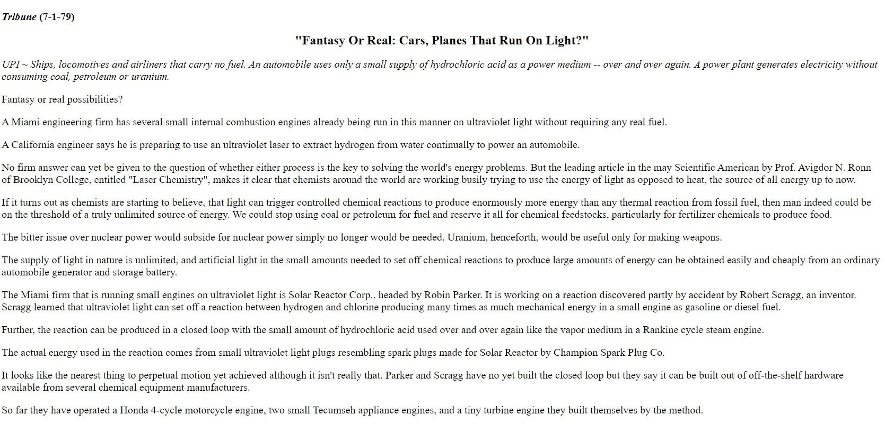
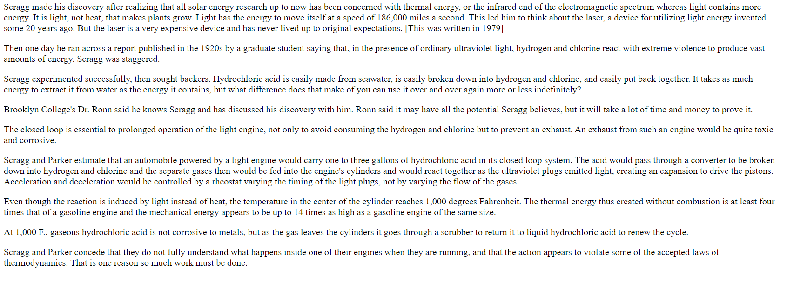

TRIBUNE
Dave Parker began studying imperfections and making improvements to Scragg's work after he first read an article in Nations Business in 1979. Here is a copy of an article from the Miami Tribune:
 
<< Previous
Home